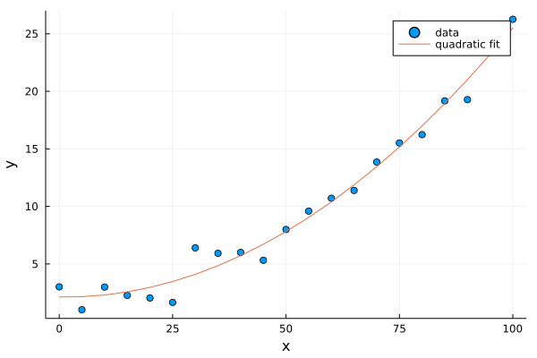

Curve Fitting
This tutorial will demonstrate fitting data with a straight line (linear regression), an arbitrary non-linear model, and finally a Bayesian model.
Packages
LinearAlgebrawe'll use this built-in Julia standard library to perform a linear regressionOptimization: we'll use this package to display coordinates along the image and add the scalebarOptimizationOptimJL: the specific optimizer backend we will use. For your own problems, select the best backend from the Optimization.jl documentation page.Turing: we'll use this package for Bayesian modelling.PairPlots: we'll use this for creating a corner plot of the posterior from our Bayesian models.
You can install the necessary packages by running Julia, and typing ] to enter Pkg-mode. Then:
pkg> add Plots Optimization OptimizationOptimJL Turing PairPlotsAlternatively, you can run
using Pkg; Pkg.add(["Plots", "Optimization", "OptimizationOptimJL", "Turing", "PairPlots"])In your own code, you most likely won't need all of these packages. Pick and choose the one that best fits your problem.
If you will be using these tools as part of a bigger project, it's strongly recommended to create a Julia Project to record package versions. If you're just experimenting, you can create a temporary project by running ] activate --temp in the Julia REPL.
If you're using Pluto notebooks, installing and recording package versions in a project are handled for you automatically.
Generating the data
We'll generate synthetic data for this problem. We'll make a weak parabola with some noise. For consistency, we'll seed the Julia random number generator so that we see the same noise each time the tutorial is run.
julia> using Random
julia> Random.seed!(1234)By calling seed!, the pattern of random numbers generated by rand and randn will be the same each time.
Now we'll generate the data:
julia> x = 0:5:100 # Or equivalently: range(0, 100, step=5)
0:1:100
julia> y = (x ./ 20 .- 0.2).^2 .+ 2 .+ randn(length(x))
101-element Vector{Float64}:
3.010656328855214
1.0432815884648003
⋮
25.653998582068482
26.260043796712125
The randn function generates a random value normally distributed around 0 with a standard deviation of 1. rand on the other hand creates uniformly distributed random values distributed between 0 and 1.
Let's plot the data to see what it looks like:
julia> using Plots
julia> scatter(x, y; xlabel="x", ylabel="y", label="data")
Linear regression
Before using any packages, let's perform a linear fit from scratch using some linear algebra.
The equation of a line can be written in matrix form as
\[\begin{pmatrix} N & \sum y_i \\ \sum y_i & \sum y_i^2 \end{pmatrix} \begin{pmatrix} c_1 \\ c_2 \end{pmatrix} = \begin{pmatrix} \sum y_i \\ \sum y_i x_i \end{pmatrix}\]
where $c_1$ and $c_2$ are the intercept and slope.
Multiplying both sides by the inverse of the first matrix gives
\[\begin{pmatrix} c_1 \\ c_2 \end{pmatrix} = \begin{pmatrix} N & \sum y_i \\ \sum y_i & \sum y_i^2 \end{pmatrix}^{-1} \begin{pmatrix} \sum y_i \\ \sum y_i x_i \end{pmatrix}\]
We can write the right-hand side matrix and vector (let's call them A and b) in Julia notation like so:
julia> A = [
length(x) sum(x)
sum(x) sum(x.^2)
]
2×2 Matrix{Int64}:
21 1050
1050 71750
julia> b = [
sum(y)
sum(y .* x)
]
2-element Vector{Float64}:
210.4250937868108
15023.030866331104We can now perform the linear fit by solving the system of equations with the \ operator:
julia> c = A\b
2-element Vector{Float64}:
-1.67268257376372
0.2338585027008085Let's make a helper function linfunc that takes an x value, a slope, and an intercept and calculates the corresponding y value:
julia> linfunc(x; slope, intercept) = slope*x + intercept
linfunc (generic function with 1 method)Finally, we can plot the solution:
julia> yfit = linfunc.(x; slope=c[2], intercept=c[1])
julia> scatter(x, y, xlabel="x", ylabel="y", label="data")
julia> plot!(x, yfit, label="best fit")
The packages LsqFit and GLM (for generalized linear models) contain functions for performing and evaluating these types of linear fits.
(Non-)linear curve fit
The packages above can be used to fit different polynomial models, but if we have a truly arbitrary Julia function we would like to fit to some data we can use the Optimization.jl package. Through its various backends, Optimization.jl supports a very wide range of algorithms for local, global, convex, and non-convex optimization.
The first step is to define our objective function. We'll reuse our simple linfunc linear function from above and create an objective function based on the sum of the squared errors
linfunc(x; slope, intercept) = slope*x + intercept
# We must supply an objective function that will be minimized
# The u argument is a vector of parameters from the optimizer.
# data is a vector of static parameters passed through below.
function objective(u, data)
# Get our fit parameters from u
slope, intercept = u
# equivalent to:
# slope = u[1]
# intercept = u[2]
# Get the x and y vectors from data
x, y = data
# Calculate the residuals between our model and the data
residuals = linfunc.(x; slope, intercept) .- y
# Return the sum of squares of the residuals to minimize
return sum(residuals.^2)
endNow, we'll use SciML's problem-algorithm-solve workflow to solve our optimization problem:
# Define the initial parameter values for slope and intercept
u0 = [1.0, 1.0]
# Pass through the data we want to fit
data = [x, y]
# Create an OptimizationProblem object to hold the function, initial
# values, and data.
using Optimization
prob = OptimizationProblem(objective, u0, data)
# Import the optimization backend we want to use
using OptimizationOptimJL
# Minimize the function. Optimization.jl uses the SciML common solver interface.
# Pass the problem you want to solve (optimization problem here) and a solver to use.
# NelderMead() is a derivative-free method for finding a function's local minimum.
sol = solve(prob, NelderMead())
# Exctract the best-fitting parameters
slope, intercept = sol.uNote: the NelderMead() algorithm behaves nearly identically to MATLAB's fminsearch.
We can now plot the solution:
julia> yfit = linfunc.(x; slope, intercept)
julia> scatter(x, y, xlabel="x", ylabel="y", label="data")
julia> plot!(x, yfit, label="best fit")
We can now test out a quadratic fit using the same package, by defining a new objective function:
function objective(u, data)
x, y = data
# Define an equation of a quadratic, e.g.:
# 3x^2 + 2x + 1
model = u[1] .* x.^2 .+ u[2] .* x .+ u[3]
# Calculate the residuals between our model and the data
residuals = model .- y
# Return the sum of squares of the residuals to minimize
return sum(residuals.^2)
endu0 = [1.0, 1.0, 1.0]
data = [x, y]
prob = OptimizationProblem(objective, u0, data)
using OptimizationOptimJL
sol = solve(prob, NelderMead())
u = sol.u
yfit = u[1] .* x.^2 .+ u[2] .* x .+ u[3]
scatter(x, y, xlabel="x", ylabel="y", label="data")
plot!(x, yfit, label="quadratic fit")
This is already very fast; however, as the scale of your problem grows, there are several routes you can take to improve the optimization performance. First, you can use automatic differentiation and a higher order optimization algorithm:
using ForwardDiff
optf = OptimizationFunction(objective, Optimization.AutoForwardDiff())
prob = OptimizationProblem(optf, u0, data)
@time sol = solve(prob, BFGS()) # another good algorithm is Newton()You can also write an "in-place" version of objective that doesn't allocate new arrays with each iteration.
Bayesian models
Let's shift gears and now create a fully Bayesian model using the Turing.jl package.
Instead of defining an arbitrary Julia function, this package requires us to use a macro called @model.
Let's start with a linear model once more, now with the Turing @model syntax:
# Bayesian linear regression.
@model function linear_regression(x, y)
# Set variance prior.
σ₂ ~ truncated(Normal(0, 100), 0, Inf)
# Typed as \sigma <tab> \_2 <tab>
# Set intercept prior.
intercept ~ Normal(0, 5)
# Set the prior on our slope coefficient.
slope ~ Normal(0, 10)
# Each point is drawn from a gaussian (Normal) distribution
# with mean calculated form our linear model, and standard
# deviation as the square root of the variance variable
for i in eachindex(x,y)
y[i] ~ Normal(x[i] * slope + intercept, sqrt(σ₂))
end
end
We can now draw posterior samples from this model using one of many available samplers, NUTS, the No U-Turn Sampler.
model = linear_regression(x, y)
chain = sample(model, NUTS(0.65), 500)┌ Info: Found initial step size
└ ϵ = 0.003125
Sampling 100%|█████████████████████████████████████| Time: 0:00:05
Chains MCMC chain (25000×15×1 Array{Float64, 3}):
Iterations = 1001:1:26000
Number of chains = 1
Samples per chain = 25000
Wall duration = 5.88 seconds
Compute duration = 5.88 seconds
parameters = σ₂, intercept, slope
internals = lp, n_steps, is_accept, acceptance_rate, log_density, hamiltonian_energy, hamiltonian_energy_error, max_hamiltonian_energy_error, tree_depth, numerical_error, step_size, nom_step_size
Summary Statistics
parameters mean std naive_se mcse ess rhat ess_per_sec
Symbol Float64 Float64 Float64 Float64 Float64 Float64 Float64
σ₂ 6.7431 2.6279 0.0166 0.0265 10640.9415 1.0000 1810.6077
intercept -1.5979 1.0739 0.0068 0.0105 10239.7534 1.0001 1742.3436
slope 0.2328 0.0186 0.0001 0.0002 10306.9493 1.0001 1753.7773
Quantiles
parameters 2.5% 25.0% 50.0% 75.0% 97.5%
Symbol Float64 Float64 Float64 Float64 Float64
σ₂ 3.3126 4.9457 6.1965 7.9372 13.3608
intercept -3.6910 -2.2965 -1.5992 -0.9049 0.5423
slope 0.1959 0.2206 0.2329 0.2449 0.2690intercept = chain["intercept"]
slope = chain["slope"]
σ₂ = chain["σ₂"]
plot(x, x .* slope' .+ intercept'; label="", color=:gray, alpha=0.05)
scatter!(x, y, xlabel="x", ylabel="y", label="data", color=1)
Each gray curve is a sample from the posterior distribution of this model. To examine the model parameters and their covariance in greater detail, we can make a corner plot using the PairPlots.jl package. We'll need a few more samples for a nice plot, so re-run the NUTS sampler with more iterations first.
Random.seed!(1234)
chain = sample(model, NUTS(0.65), 25_000)
using PairPlots
table = (;
intercept = chain["intercept"],
slope = chain["slope"],
σ = sqrt.(chain["σ₂"])
)
PairPlots.corner(table)
Let's now repeat this procedure with a Bayesian quadratic model.
@model function quad_regression(x, y)
# Prior on the variance of the data around the best-fit line
σ₂ ~ truncated(Normal(0, 10), 0, Inf)
# Priors on the three quadratic parameters
u1 ~ Normal(0,0.01)
u2 ~ Normal(0,0.1)
u3 ~ Normal(0,5)
for i in eachindex(x,y)
model = u1 * x[i]^2 + u2*x[i] + u3
y[i] ~ Normal(model, sqrt(σ₂))
end
end
We can now draw posterior samples from this model using one of many available samplers, NUTS, or the No U-Turn Sampler.
model = quad_regression(x, y)
chain = sample(model, NUTS(0.65), 500)┌ Info: Found initial step size
└ ϵ = 0.0001953125
Sampling 100%|█████████████████████████████████████| Time: 0:00:05
Chains MCMC chain (500×16×1 Array{Float64, 3}):
Iterations = 251:1:750
Number of chains = 1
Samples per chain = 500
Wall duration = 5.89 seconds
Compute duration = 5.89 seconds
parameters = σ₂, u1, u2, u3
internals = lp, n_steps, is_accept, acceptance_rate, log_density, hamiltonian_energy, hamiltonian_energy_error, max_hamiltonian_energy_error, tree_depth, numerical_error, step_size, nom_step_size
Summary Statistics
parameters mean std naive_se mcse ess rhat ess_per_sec
Symbol Float64 Float64 Float64 Float64 Float64 Float64 Float64
σ₂ 1.5698 0.6322 0.0283 0.0518 117.5553 0.9994 19.9517
u1 0.0024 0.0003 0.0000 0.0000 134.9184 0.9997 22.8986
u2 -0.0059 0.0283 0.0013 0.0024 107.3698 0.9995 18.2230
u3 2.1371 0.6109 0.0273 0.0562 87.2121 0.9995 14.8018
Quantiles
parameters 2.5% 25.0% 50.0% 75.0% 97.5%
Symbol Float64 Float64 Float64 Float64 Float64
σ₂ 0.8757 1.1468 1.3945 1.8181 3.3834
u1 0.0018 0.0022 0.0024 0.0026 0.0030
u2 -0.0612 -0.0237 -0.0045 0.0133 0.0438
u3 0.9635 1.7155 2.1211 2.5172 3.3960u1 = chain["u1"]
u2 = chain["u2"]
u3 = chain["u3"]
posterior = u1' .* x.^2 .+ u2' .* x .+ u3'
plot(x, posterior; label="", color=:gray, alpha=0.1)
scatter!(x, y, xlabel="x", ylabel="y", label="data", color=1)
Random.seed!(1)
chain = sample(model, NUTS(0.65), 25_000)
using PairPlots
table = (;
u_1 = chain["u1"],
u_2 = chain["u2"],
u_3 = chain["u3"],
σ = sqrt.(chain["σ₂"])
)
PairPlots.corner(table)